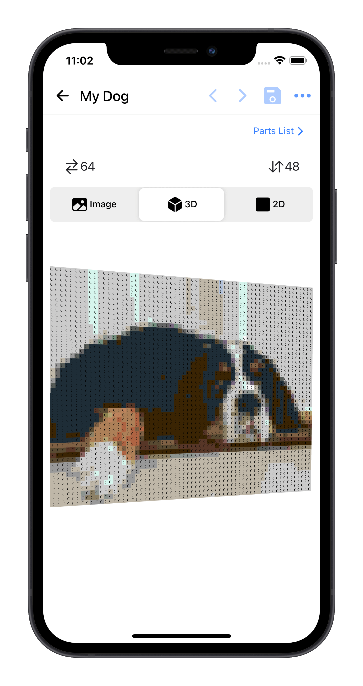

Transform your photos into fantastic Lego mosaics effortlessly with our unique app.

Discover the step-by-step process to transform your favorite images into beautiful Lego mosaics with BrickPix.
BrickPix allows you to upload a photo, and in a few simple steps, you'll receive a map-by-color guide to create your Lego masterpiece!
Simply upload your image to the BrickPix app, select your desired colors, and we'll generate a guide that includes a detailed piece list with step-by-step instructions.
Yes! You can convert any image into a Lego mosaic. Whether it’s a family photo or a pet, BrickPix will help bring it to life with Lego bricks.
Absolutely! BrickPix is designed for users of all ages with an intuitive interface and clear instructions.